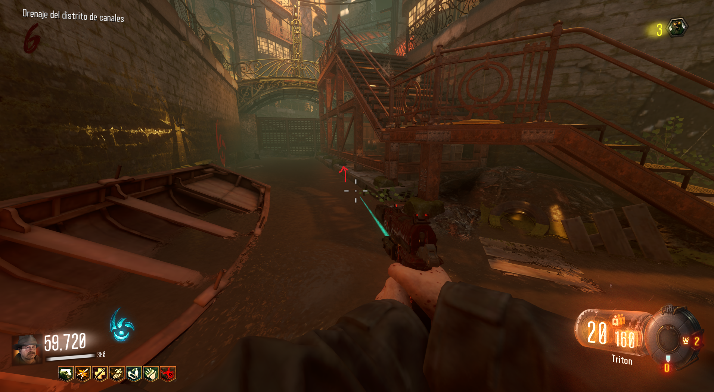

Reproducir canción
Para reproducir la canción de Shadows of Evil, tendremos que interactuar con las 3 partes de un micrófono.
Primera parte:
En el ritual del Spawn, a la derecha de las escaleras, veremos el soporte del micrófono.
Segunda parte:
En Canals, debajo de las escaleras, veremos el cable.

Tercera parte:
En la zona del PaP, justo encima de la ubicación de la caja, veremos la carcasa de metal del micrófono.
Si vamos al ritual de Footlight, veremos el micrófono totalmente montado en el escenario. Al interactuar con él, la canción sonará.